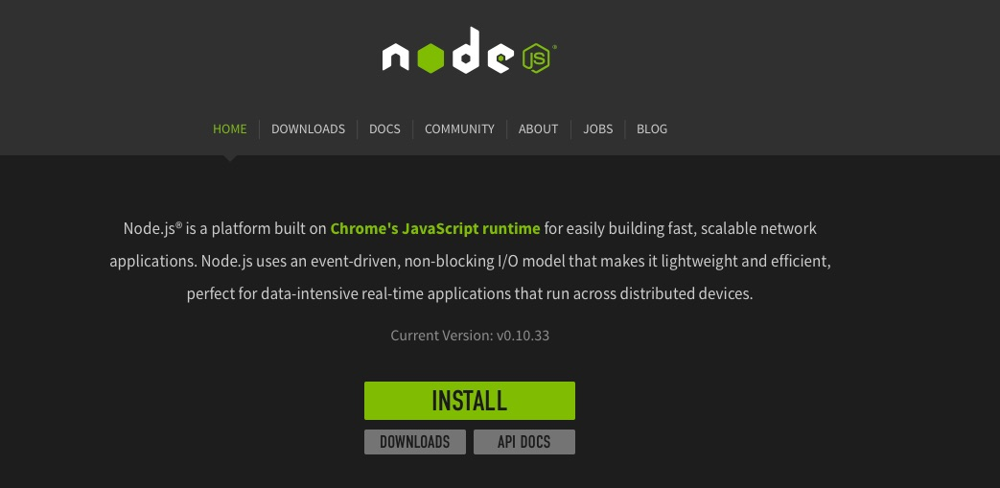
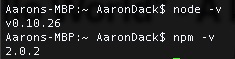
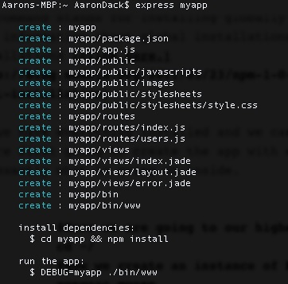
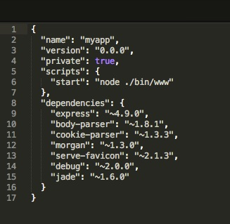
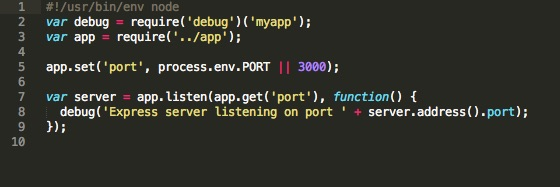
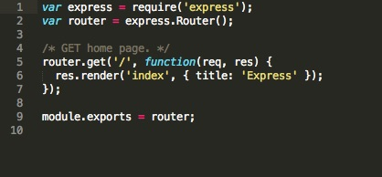
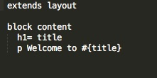
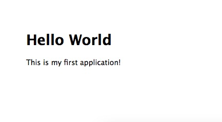

Hello World - A beginners approach to building a simple web app with Node.js and the express.js framework.
Word of warning: All the examples shown are with mac OS.
The biggest problem that people face when first beginning to learn programming is a lack of implementing what they have learned to build something. This happens all the time for people that want to "learn to code" on the internet. It seems that we take the more historical approach teaching theory first and actually implemeting later. There are several websites that have attempted to alleviate this problem such as Code Academy and Treehouse, opting for the more active learning where building and theory are intertwined. In this tutorial we are just going to flat out build the most basic bare bones web applicationt to exist. I'm fairly certain there is very little coding to actually do and the end product is something that you can say you actually built!
First thing that you are going to need is node.js on your machine. If you don't have it you can swing by the node website and pick up a copy. It's a pretty straightforward process just follow the directions and install onto your machine.

Once installed fire up the terminal and lets check a couple things. You can see the version of node that you are running by node -v, and you can also see the node package manager version by running npm -v. The node package manager will be a great time saver in installing everything that holds dependencies with node. Listed below is my computer's versions and the simple lines you need to see the versions.

Now that we have node installed we will need to use the package manager to install express. Make sure in terminal that you are in your top level directory when installing.
#cd means "change directory"
cd ~/
npm install -g express-generator
If you are receiving an error referring to your permissions not allowing you to install try again with the sudo command. The reason you cannot install is because you do not have your user with root permissions.
sudo npm install -g express-generator
A word of warning, It is going to ask you for your password and once you begin typing don't expect the letters or numbers to show up. The text is hidden so just keep typing your password and submit it. FYI, the -g in our command stands for installing globally. If you want more information about global installations versus local installations click here.
Now we have everything installed and we can begin working! We are first going to create the app with express and then see exactly what is going on inside.
#Here we are going to our highest directory
cd ~/
#Now we create an instance of Express
express myapp
I named my application "myapp" but feel free to name it anything that you would like. You should now have something similar to below.

To install dependencies we are going to follow the directions exactly how they say. Change directories to the name that you created, in my case it is "myapp" and then npm install. You could also highlight that line and just right click in your command line and it will change directories and install in one line.
From here you can run the app by just typing that DEBUG command. However, let's see exactly what is going on within the app that we have created. Open up the project folder in your favorite text editor, I prefer Sublime but any text editor will do.
If this is your first time looking at javascript this can get very difficult quickly and honestly very overwhelming. Let's look at the package.json file and go through this piece by piece.

Here listed in this json file are some details about our app. It lists the name, version, the privacy and also how to start the app. To initally run the app you are going to use the debug command but from then on you can start using the start script. It also lists what have dependencies with node. Listed here is express that we previously just installed as a dependency.
Now that we have some basic working knowledge, navigate to bin and open the file www. It should look like this right now.

Here we have two variables. We are going to focus on app. The variable app requires '../app' which means it is referring to a file named "app" in our parent directory. If we look at our folder structure we see a file named app.js. Opening this we see a whole bunch of javascript and this is really the meat and potatoes of our web app. Following that variable we have app.set setting the port for our server to 3000. This is good information in understanding how our application will be running.
Now let's navigate back to our terminal and see what the app will create. Go ahead and use the debug command, if you forgot I have it below.
debug=myapp ./bin/www
You should now receive "Express server listening on port 3000" just like the server variable said. You can change ports to whatever you want or even change the text but I always just leave it as default. Navigate to a browser and go to localhost:3000. It should look like below.
Congratulations! You have a web application that is running successfully and there was little to no coding involved. Now if it was all like this we would be in for a treat.
Finally, let's check exactly how this Express and Welcome to Express is being displayed. In your folder structure find the file index.js under the routes tab. It should look like below.

Here we have a router to our home screen. We have an express router that gets the home screen with a function containing two parameters, request and response. The function states once there's a request respond with rendering this 'index' which will point to the index.jade file in our views folder. It will render that file with the title "Express".
Look in your folder structure for views and open the index.jade file. There shouldn't be much in it to begin with.

Extends is a keyword that allows inheritence of a parent template. Here we are extending layout.jade. If you are familiar at all with html this text should be simple to understand. We have this h1 which is the first header named title. Remember in our index.js how we named the title "Express"? Last, we have a paragraph with Welcome to #{title} which also references back to the title we established in our index.js file. Let's go ahead and change this up a bit.
extends layout
block content
h1= title
This is my first application!
Navigate back to the index.js file under routes, now we are going to edit the title.
router.get('/', function(req, res) {
res.render('index', { title: 'Hello World'});
});
Now we can run our application and see some changes.
DEBUG=myapp ./bin/www
Here is the finished product. Like I said, you get to see something that you built and there was little to no coding, how easy was that!

If you want to learn more about routes and views feel free to leave a comment below; I will be following up with more blog posts about node.js and building web applications!